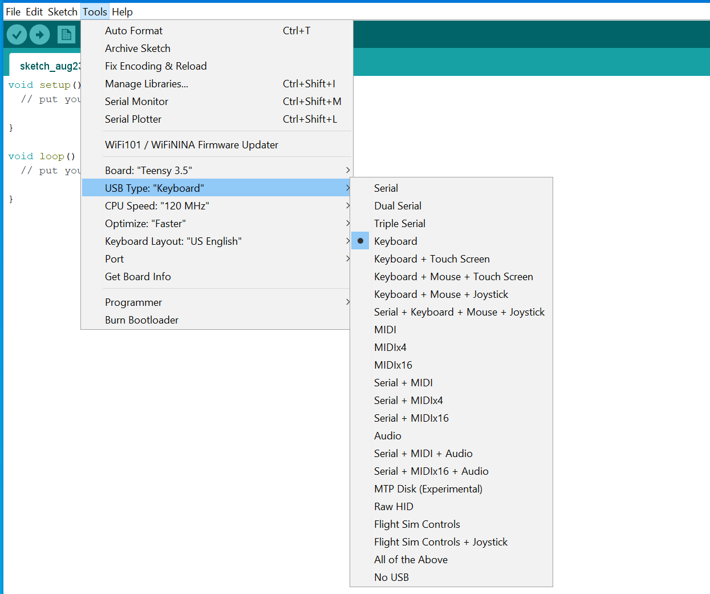

Programming the Teensy board
The code running on the microcontroller was written with the Arduino IDE using the teensyduino add-on.
Arduino
The Arduino IDE can be downloaded here.
Teensyduino
Download and install the Teensyduino add-on
Code
Upload the code on the Teensy board by cutting and pasting the code block below in Arduino IDE or downloading the file Neuromod_Game_Controller.ino and opening it. Then select the board Teensy 3.5 and USB type Keyboard in the Tools menu. After this is done, click the upload button.

/*
Name: Neuromod_Game_Controller.ino
Created: 2019-01-08 11:22:35
Author: Andre Cyr
*/
#include <usb_keyboard.h>
char keyVal[] = {'A','B','X','Y','U','R','D','L'};
char trgKeyVal = '5';
uint8_t rxPin[] = { 24,25,26,27,28,29,30,31 };
uint8_t nPin = sizeof(rxPin);
uint16_t rxPinState[sizeof(rxPin)];
uint8_t trgPin = 2;
uint8_t txPin[] = {14,15,16,17,18,19,20,21,22,23};
uint16_t timeKeyPressed;
bool buttonPressed[sizeof(rxPin)];
bool buttonToggled[sizeof(rxPin)];
bool trigKeyPressed;
volatile bool triggered = false;
bool debug;
uint8_t ledPin = 13;
uint8_t trgKeyPressLength;
// The setup() function runs once each time the micro-controller starts
void setup()
{
pinMode(trgPin, INPUT);
pinMode(ledPin, OUTPUT);
debug = digitalRead(trgPin) == 0 ? true : false;
trgKeyPressLength = 10; // duration of key press for trigger in ms
for (int i = 0;i < nPin;i++)
{
pinMode(rxPin[i], INPUT);
rxPinState[i] = 0;
buttonPressed[i] = true;
buttonToggled[i] = true;
}
for (int i = 0; i < nPin; i++)
{
pinMode(txPin[i], OUTPUT);
digitalWrite(txPin[i], HIGH);
}
attachInterrupt(trgPin, trgIn, RISING);
delay(1000); //required for PC to properly detect keyboard
Keyboard.println("Initializing...");
Keyboard.print("Trigger key = ");
Keyboard.println(trgKeyVal);
for (int i = 0;i < nPin;i++)
{
bool pinDetected = digitalRead(rxPin[i]) ? false : true;
if (pinDetected)
{
Keyboard.print("Key ");
Keyboard.print(keyVal[i]);
Keyboard.println(" : OK ");
}
else
{
Keyboard.print("Key ");
Keyboard.print(keyVal[i]);
Keyboard.println(" : not detected ");
}
}
}
// Add the main program code into the continuous loop() function
void loop()
{
if (debug)
{
// write debug code here
// debug mode is activated by pulling pin 2 (trigger pin) low at start-up
}
else
{
if (triggered)
{
Keyboard.press(trgKeyVal);
timeKeyPressed = millis();
trigKeyPressed = true;
triggered = false;
}
else
{
if (trigKeyPressed)
{
if ((millis() - timeKeyPressed) > 10)
{
Keyboard.release(trgKeyVal);
trigKeyPressed = false;
}
}
}
// Sequentially reads each key state and writes state as LSB in rxPinState[i]
// shiftings bits left by 1 bit
for (int i = 0;i < nPin;i++)
{
rxPinState[i] = (rxPinState[i] << 1) | (1 & digitalRead(rxPin[i]));
}
for (int i = 0;i < nPin;i++)
{
// The key state will be considered pressed and debounced if all bits are 1s,
// or released and debounced if all bits are 0s (16 identical readings)
if (rxPinState[i] & 65535)
{
buttonToggled[i] = buttonPressed[i] ? false : true;
buttonPressed[i] = true;
}
if (!rxPinState[i])
{
buttonToggled[i] = buttonPressed[i] ? true : false;
buttonPressed[i] = false;
}
}
for (int i = 0;i < nPin;i++)
{
if (buttonPressed[i] & buttonToggled[i])
{
Keyboard.press(keyVal[i]);
buttonToggled[i] = false;
}
if (!buttonPressed[i] & buttonToggled[i])
{
Keyboard.release(keyVal[i]);
buttonToggled[i] = false;
}
}
}
}
void trgIn()
{
triggered = true;
}